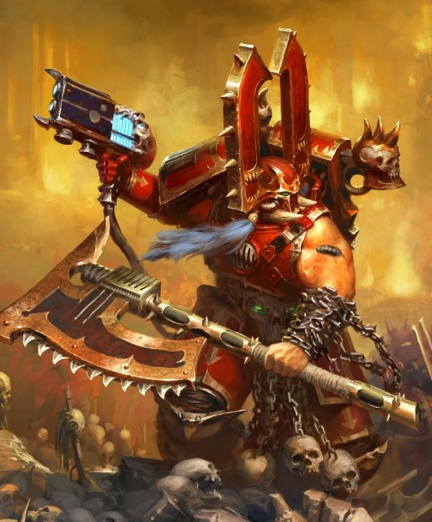
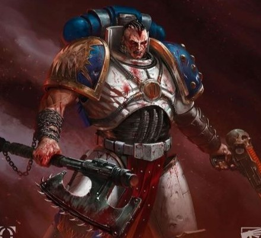

Khârn the Betrayer
| Khârn the Betrayer | |
|---|---|
| Champion of Khorne | |
 Khârn with the chain-axe Gorechild, from an Ordo Malleus plate of the late 41st millennium Artwork © Games Workshop | |
| Equerry to Angron | |
| Tenure | Late M30 – 014.M31[a] |
| Predecessor | Unrecorded |
| Successor | Unrecorded |
| Captain of the 8th Assault Company, World Eaters | |
| Tenure | Late M30 – 014.M31 |
| Predecessor | Unrecorded |
| Successor | Unrecorded |
| Born | M30 (records lost) |
| Status | Active in the Era Indomitus |
| Allegiance | Khorne; formerly the Emperor, then Horus |
| Legion | World Eaters (XII), formerly the War Hounds |
| Wargear | Gorechild, once Angron's chain-axe; plasma pistol; Heresy-era power armour |
| Known for | The massacre at Isstvan III (005.M31); the breach at the Lion's Gate (014.M31); the burning of Skalathrax |
Khârn the Betrayer, also written Kharn, is a Chaos Space Marine of the World Eaters Legion and the most celebrated mortal champion of Khorne, the Blood God. Before the Horus Heresy he was captain of the Legion's 8th Assault Company and Equerry to its primarch, Angron, the officer whose duty was to temper his master's rages. He followed Angron into rebellion, fought through the Siege of Terra in 014.M31, and survived wounds that should have killed him.[1][2]
His name comes from the daemon world Skalathrax, where, in the years after the Heresy, he set fire to the shelters of his own Legion and of the Emperor's Children and killed warriors of both, shattering the World Eaters into the warbands they have remained ever since. For ten thousand years he has fought wherever there is killing to be done, and his allies can never be sure he will not turn on them. Ordo Malleus scholars speculate that he has killed more World Eaters than all their enemies combined.[1]
Great Crusade
[edit]
Khârn joined the XII Legion while it was still the War Hounds, before Angron was found. He rose to captain of the 8th Assault Company. When the primarch was recovered in the late 30th millennium, Angron refused his Legion and murdered at least seven of its senior officers, among them the Legion Master. Khârn then went to the primarch's quarters alone and was beaten almost to death without yielding, and it was this that persuaded Angron the Legion was worthy of him. Khârn was made his Equerry, the one officer Angron would hear. Remembrancers of the period describe him as a brilliant, articulate and unstable warrior. Like the rest of his Legion he received the implants of the Butcher's Nails, which stoke aggression and are forbidden by the Emperor, and like the rest of his Legion he came to depend on them.[2][3]
Horus Heresy
[edit]Isstvan III
[edit]At the Isstvan III massacre of 005.M31 Khârn fought the loyalist Garviel Loken of the Sons of Horus and was thrown onto the teeth of a tank's dozer blade, which impaled his chest. He was believed killed, but survived. Loken's record of the fight reports Khârn claiming to be "the Eightfold Path", the first sign of his devotion to the Blood God.[2]
Prospero
[edit]Some months after the Burning of Prospero, Khârn led World Eaters to that world to recover the Moon Wolf, a pendant from Horus's armour that Magnus the Red had used in sorcery. There he captured the Thousand Sons captain Menes Kalliston, who offered to remove the Nails and restore him. Khârn's rage overcame him and he killed his captive. Kalliston's last vision, recorded by his brothers, foresaw that Khârn would one day turn on any force that tried to use him.[2]
The Shadow Crusade and Gorechild
[edit]During the Shadow Crusade against Ultramar, the World Eaters were drawn into a trap on the war world Armatura, where the Ultramarines brought down buildings on Angron and his Legion. The primarch discarded his ruined axe Gorechild, holding that inherited weapons brought bad luck. Khârn took it, had the Dark Mechanicum restore it, and replaced its lost teeth with fangs of Mica Dragons from the Legion's trophy halls. He has carried it ever since.[2][b]
Siege of Terra
[edit]At the Siege of Terra Khârn was at the front of the World Eaters' assaults. He is recorded as the first of the Legion through the walls of the Imperial Palace at the Lion's Gate, and claimed more skulls than any of his brothers. By the time of Horus's death he lay among the heaps of Traitor dead before the inner palace. Some accounts of the last day record that he was struck down before the Eternity Gate by Sigismund of the Imperial Fists. His warriors carried him back to their ships.[2][c]
Khârn lay near death in the hold of the Conqueror while the Legion's captains argued over who would lead. When one captain killed another over his body, Khârn rose, revived, his warriors believed, by the spilled blood.[1]
Skalathrax
[edit]In the Eye of Terror the World Eaters sought a home, and came to the daemon world Skalathrax, a former Aeldari world also coveted by the Emperor's Children. The two Legions fought for it until a killing cold fell at night, against which even Space Marines took shelter. Furious at the halt, Khârn took a flamer and burned the shelters, then went through the night killing World Eaters and Emperor's Children alike. Among those he killed was his old training officer, the Centurion Gruner. The World Eaters never fought again as a single Legion. Imperial records place the burning in the Legion Wars, within a few centuries of the Heresy.[1][4]
The Long War
[edit]
After Skalathrax Khârn vanished into the Eye to seek new enemies. He has fought across the galaxy since, mostly with Gorechild. When the axe jammed in a war machine in the manufactorum of Ulsa during the Bloodtorrent War, he used the factory itself to kill more than a thousand Imperial Guardsmen. In the Seventh Black Crusade of 811.M37 he was the first to board the Blood Angels strike cruiser Sanguine Tear, fought alone against a dozen Terminators until his warband followed, and was the last to leave. Abaddon the Despoiler has drawn him into his crusades more than once, and he fought before Cadia in the Thirteenth Black Crusade of 999.M41.[1]
Khârn has killed humans, Aeldari Autarchs, Ork Warbosses, Necron Overlords and Tyranid Hive Tyrants. Many Chaos warlords have recruited him only to find that, when no enemy remained nearby, he turned on them. The only warriors who follow him willingly are World Eaters drawn by his name. Tales in the Eye say that a pile of skulls beside Khorne's throne is reserved for his offerings alone.[1]
Era Indomitus
[edit]The rebirth of Angron in the Era Indomitus has drawn many of the scattered World Eaters back to their primarch's banner. Ordo Malleus reports place Khârn among the warbands that fight in Angron's hosts, though he answers to no captain and is reported to fight wherever the slaughter is greatest. No Imperial account claims to have killed him since the Siege.[5][1]
Character
[edit]Khârn's mind burns with a rage he cannot quench. Accounts from the Heresy describe a man who knew what the Nails had done to him and despised the killing that drove him; ten thousand years later, Imperial interrogators describe no such man left. He holds that the Traitors lost at Terra because of weakness, and that the World Eaters must never be defeated again: their enemies must fall, or they must give themselves to Khorne in their place.[1][2]
Timeline
[edit]| Date | Event |
|---|---|
| Late M30 | Captain of the 8th Assault Company; Equerry to Angron |
| 005.M31 | Isstvan III; wounded by Loken |
| c. 006.M31 | Prospero; death of Menes Kalliston |
| c. 008–009.M31 | Armatura; takes Gorechild |
| 014.M31 | Siege of Terra; breach at the Lion's Gate; struck down |
| c. M31 | The burning of Skalathrax[d] |
| 811.M37 | Boarding of the Sanguine Tear |
| 999.M41 | Thirteenth Black Crusade |
See also
[edit]Notes
[edit]- ^ His appointment is dated from the finding of Angron in the late 30th millennium; no record gives the year.
- ^ The Armatura campaign is dated to c. 008–009.M31 from the course of the Shadow Crusade.
- ^ Accounts of who wounded Khârn at the end of the Siege differ; the Black Templars' own tradition names Sigismund.
- ^ Estimated; Imperial sources place it early in the Legion Wars.
References
[edit]- ^ a b c d e f g h Reynolds, Anthony. Chosen of Khorne (Audio Drama). Black Library. Codex Heretic Astartes - Chaos Space Marines (8th Edition), pp. 81, 120. Games Workshop.
- ^ a b c d e f g McNeill, Graham. False Gods (novel). Black Library. Counter, Ben. Galaxy In Flames (novel). Black Library.
- ^ Counter, Ben. Battle for the Abyss (novel). Black Library. Dembski-Bowden, Aaron. Butcher's Nails (Audio Drama). Black Library.
- ^ Dembski-Bowden, Aaron. Betrayer (novel). Black Library. Goulding, Laurie. The Weakness of Others (novella). Black Library.
- ^ Reynolds, Anthony. Khârn - Eater of Worlds (novella). Black Library. Codex: Chaos Space Marines (6th Edition), pg. 59. Games Workshop.